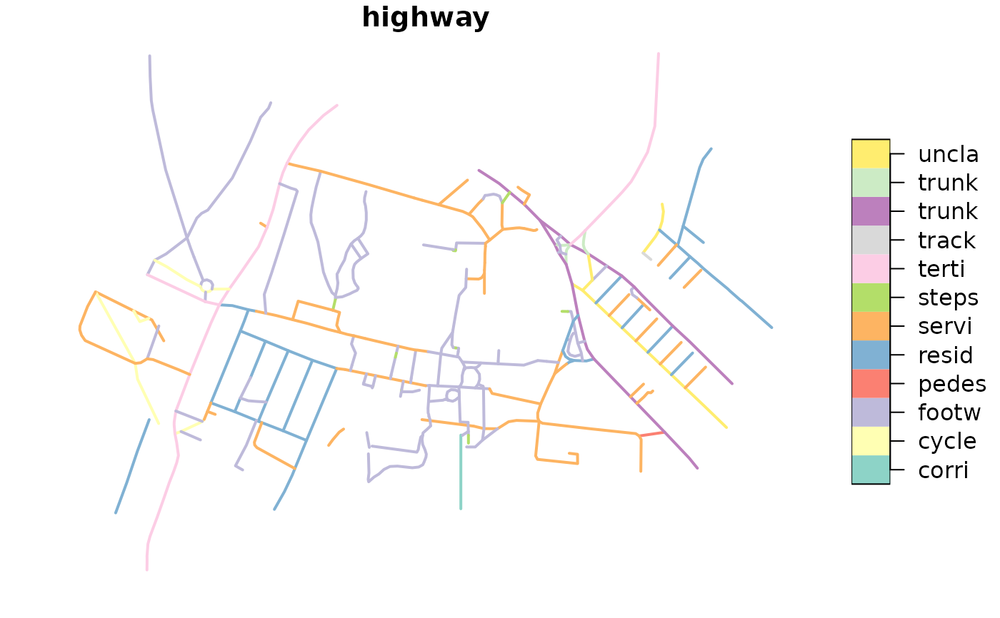
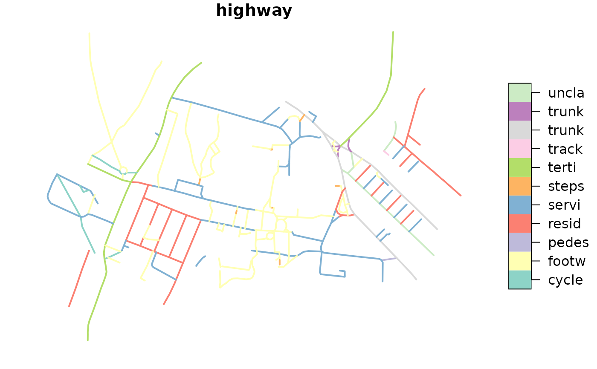
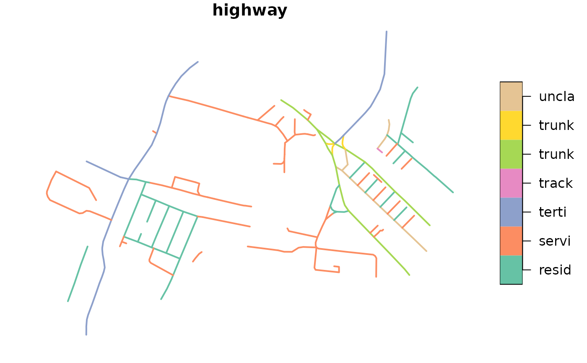

R/get-network.R
oe_get_network.RdThis function is a wrapper around oe_get() and can be used to import a road
network given a place and a mode of transport. Check the Details for a
precise description of the procedures used to filter each mode of transport.
oe_get_network(place, mode = c("cycling", "driving", "walking"), ...)| place | Description of the geographical area that should be matched with
a |
|---|---|
| mode | A character string denoting the desired mode of transport. Can be abbreviated. |
| ... | Additional arguments passed to |
An sf object.
The cycling mode of transport (i.e. the default value for mode
parameter) selects the OSM ways that meet the following conditions:
The highway tag is not missing and is not equal to abandonded,
bus_guideway, byway, construction, corridor, elevator, fixme,
escalator, gallop, historic, no, planned, platform, proposed,
raceway or steps;
The highway tag is not equal to motorway, motorway_link, footway,
bridleway or pedestrian unless the tag bicycle is equal to yes (see
here)
for more details;
The access tag is not equal to private or no unless bicycle tag
is equal to yes;
The bicycle tag is not equal to no, use_sidepath, private, pr
restricted;
The service tag does not contain the string private (i.e. private;
private_access and similar);
The walking mode of transport selects the OSM ways that meet the
following conditions:
The highway tag is not missing and is not equal to abandonded,
bus_guideway, byway, construction, corridor, elevator, fixme,
escalator, gallop, historic, no, planned, platform, proposed,
raceway, motorway or motorway_link;
The highway tag is not equal to cycleway unless the foot tag is
equal to yes;
The access tag is not equal to private or no unless foot tag
is equal to yes;
The foot tag is not equal to no, use_sidepath, private, pr
restricted;
The service tag does not contain the string private (i.e. private;
private_access and similar).
The driving mode of transport selects the OSM ways that meet the
following conditions:
The highway tag is not missing and is not equal to abandonded,
bus_guideway, byway, construction, corridor, elevator, fixme,
escalator, gallop, historic, no, planned, platform, proposed,
cycleway, pedestrian, bridleway, path, or footway;
The access tag is not equal to private or no;
The service tag does not contain the string private (i.e. private;
private_access and similar).
The choices adopted in this function are based on the following documents: https://wiki.openstreetmap.org/wiki/OSM_tags_for_routing/Access_restrictions and https://wiki.openstreetmap.org/wiki/Key:access plus the discussion in https://github.com/ropensci/osmextract/issues/153
Feel free to start a new issue in the github repo if you want to suggest modifications to the current filters or propose new values for alternative modes of transport.
# default value returned by OSM
its = oe_get("ITS Leeds", quiet = TRUE)
plot(its["highway"], lwd = 2, key.pos = 4, key.width = lcm(2.75))

# walking mode of transport
its_walking = oe_get_network("ITS Leeds", mode = "walking", quiet = TRUE)
plot(its_walking["highway"], lwd = 2, key.pos = 4, key.width = lcm(2.75))

# driving mode of transport
its_driving = oe_get_network("ITS Leeds", mode = "driving", quiet = TRUE)
plot(its_driving["highway"], lwd = 2, key.pos = 4, key.width = lcm(2.75))
